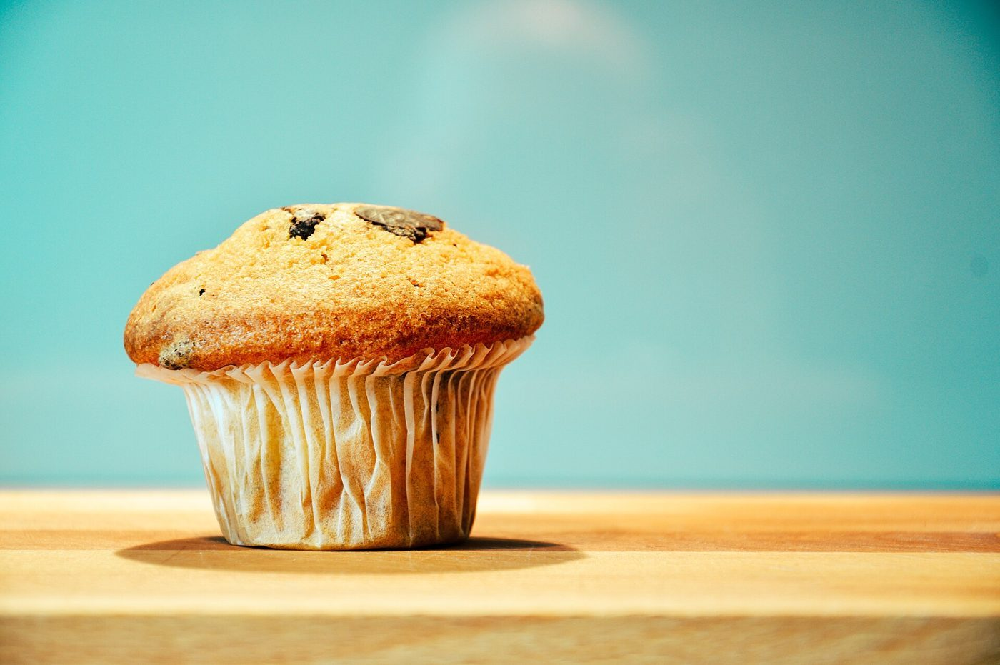

制作側の連想
レーザー加工機を、六つの部位の配置図にしてみる
このサイトは、材料を光で切ったり彫ったりする機械を図にしたつもりで作りました。六つの部位に番号をふり、上の図と並べています。制作側の連想で、お店の理念・由来とは無関係です。実際の製品の仕様を示すものでもありません。
凡例
六つの部位
- 1レーザーヘッドレンズで光を一点に絞り、材料に当てる可動部分。
- 2ガントリーヘッドを左右に走らせる、橋のような梁とレール。
- 3加工テーブル材料をのせる台。蜂の巣状の格子で材料を支える。
- 4排気ダクト加工で出る煙を外へ逃がす、本体上部の管。
- 5観察窓つきのフタ中の様子を見るための窓がある、開け閉めできる覆い。
- 6操作パネルボタンや画面で、動かす・止めるを指示する面。
ギャラリー(イメージ)
パンと焼き菓子の写真




写真はパンや焼き菓子のイメージです。お店のものではなく、お店で提供している商品を示すものでもありません。

ご案内
お店のこと(確認できたものだけ)
| 所在地 | 〒307-0001 茨城県結城市結城6042-2 |
|---|---|
| 電話 | 準備中 |
| 営業時間 | 準備中 |
| 定休日 | 準備中 |
| ご予約 | 準備中 |
| 駐車場 | 準備中 |
| SNS | Instagram @baku.to.pan |